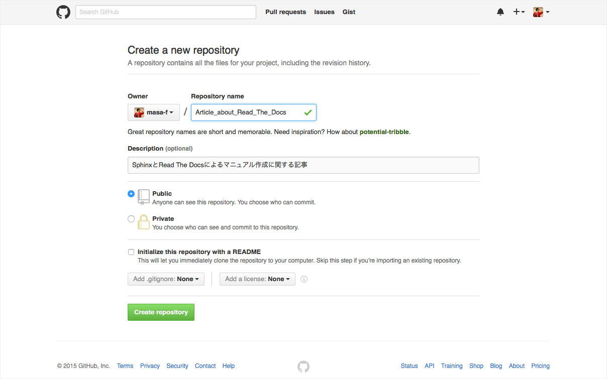
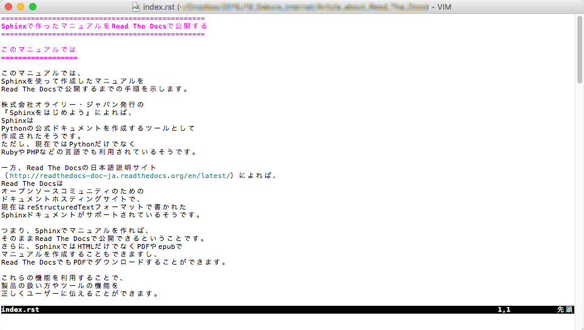
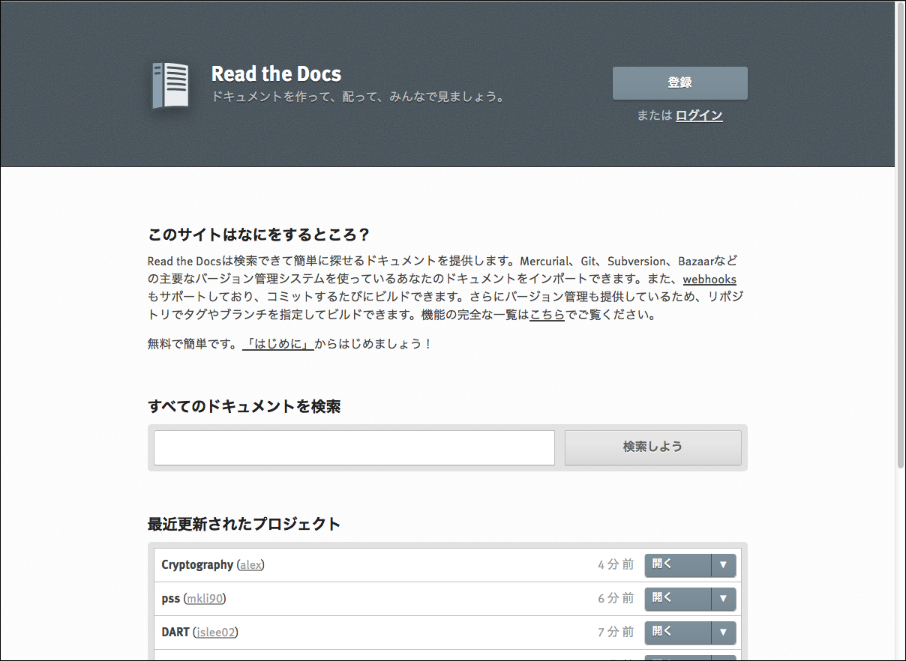
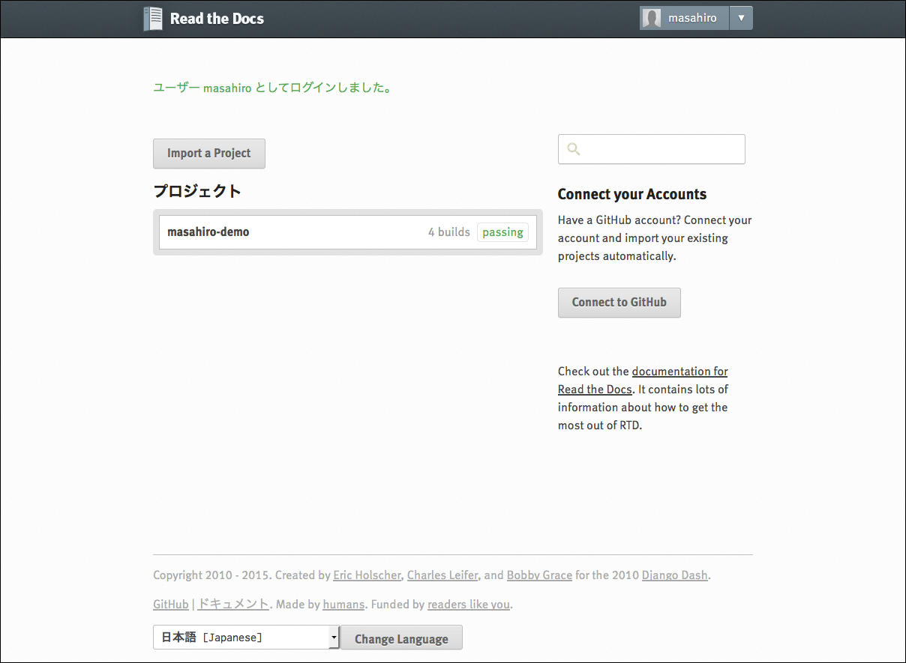
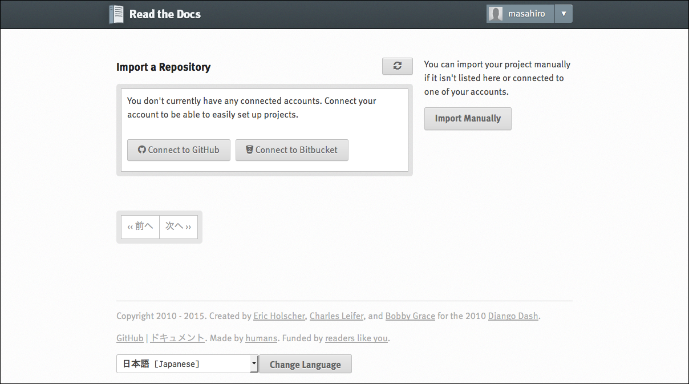
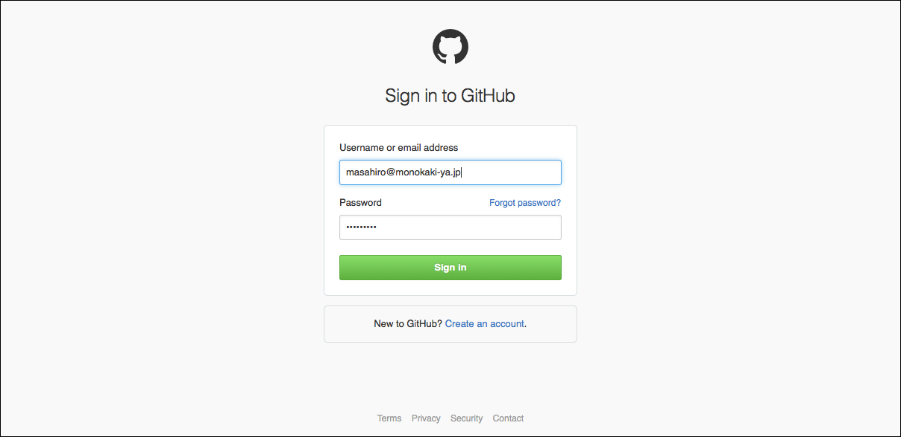
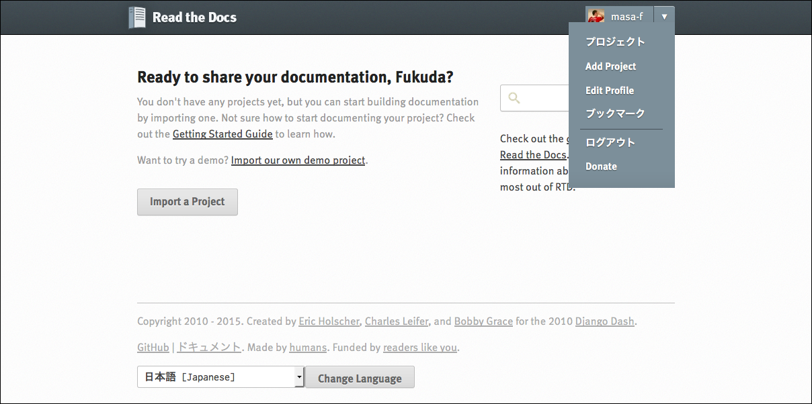

Sphinxで作ったマニュアルをRead The Docsで公開する¶
このマニュアルでは¶
このマニュアルでは、 Sphinxを使って作成したマニュアルを Read The Docsで公開するまでの手順を示します。
株式会社オライリー・ジャパン発行の 『Sphinxをはじめよう』によれば、 Sphinxは Pythonの公式ドキュメントを作成するツールとして 作成されたそうです。 ただし、現在ではPythonだけでなく RubyやPHPなどの言語でも利用されているそうです。
一方、Read The Docsの日本語説明サイト （http://readthedocs-doc-ja.readthedocs.org/en/latest/）によれば、 Read The Docsは オープンソースコミュニティのための ドキュメントホスティングサイトで、 現在はreStructuredTextフォーマットで書かれた Sphinxドキュメントがサポートされているそうです。
つまり、Sphinxでマニュアルを作れば、 そのままRead The Docsで公開できるということです。 さらに、SphinxではHTMLだけでなくPDFやepubで マニュアルを作成することもできますし、 Read The DocsでもPDFでダウンロードすることができます。
これらの機能を利用することで、 製品の扱い方やツールの機能を 正しくユーザーに伝えることができます。
Sphinxをインストールする¶
まず、作業に使うマシンに Sphinxをインストールします。 ここでは、筆者が使用しているMac OS Xの環境に Sphinxをインストールしたときの手順を示します。 他のOSでのインストールなどの詳細情報は、 Sphinxの日本ユーザ会のWebサイト （http://sphinx-users.jp/gettingstarted/）での説明を参照してください。
- App StoreからXcodeをインストールする。
- Terminalを起動し、次のように入力してpythonのバージョンを確認する。
$ python
- 外部ライブラリをインストールするために、 次のリンク（https://bitbucket.org/pypa/setuptools/raw/bootstrap/ez_setup.py）を 右クリックしてez_setup.pyをダウンロードする。
- Terminalで、次のように入力してeasy_installコマンドをインストールする。
$ sudo python ez_setup.py
- 次のように入力してSphinxをインストールする。
$ sudo easy_install sphinx
GitHubでプロジェクトを作る¶
Sphinxをインストールし終えたので、 マニュアルのデータを収めるリポジトリを github上に作成します。
githubでリポジトリを作成したら、 次の手順でリポジトリのクローンを ローカルの環境に作成し、 そこにSphinxのプロジェクトを作成します。
- Terminal上でgit cloneコマンドを実行し、 リポジトリのクローンをローカルの環境に作成する。
$ git clone https://github.com/masa-f/Article_about_Read_The_Docs.git
- 作成したローカルの環境内に移動し、 Sphinxのプロジェクトを作成する。
$ sphinx-quickstart
ここで、ドキュメントのルートパス（Root path for the documentation）は デフォルトの[.]のままにしておきます。
- 作成したプロジェクトの内容を リポジトリにコミットする。
$ git add *
$ git commit -m "Initialized"
マニュアルを書く¶
ここまでの作業を終えたら、 マニュアルの内容を書き始めます。 マニュアルの内容は、 MacVimなどを使って Sphinxのindex.rstに書き込みます。
HTMLファイルをビルドする¶
マニュアルの内容を書き込み終えたら、 index.rstを元にHTMLファイルを生成します。
- Terminal上でmake htmlコマンドを実行します。
$ make html
- 生成されたサブディレクトリ_buildのhtml内にある index.htmlをFirefoxで表示します。
GitHubにコミットする¶
HTMLファイルの表示内容に問題がなければ、 生成したファイル群をgithubのリポジトリにコミットします。
$ git add *
$ git commit -m "1st Prototype"
$ git push
Read The Docsにインポートする¶
Read the DocsのWebサイト（https://readthedocs.org/）にアクセスして ［登録］ボタンを押しユーザー登録しておきます。
ログインしたら［Import a Project］ボタンをクリックします。
［Import a Project］ボタンをクリックすると、［Import a Repository］画面が表示されます。 ここで［Connect to GitHub］ボタンをクリックします。
［Connect to GitHub］ボタンをクリックすると、 ［Sign in to GitHub］画面が表示されます。 ここで、githubにログインします。
githubにログインしたら 右上のメニューを開き［Add Project］をクリックします。
［Import a Repository］画面でリサイクルボタンをクリックして リポジトリの内容を更新します。